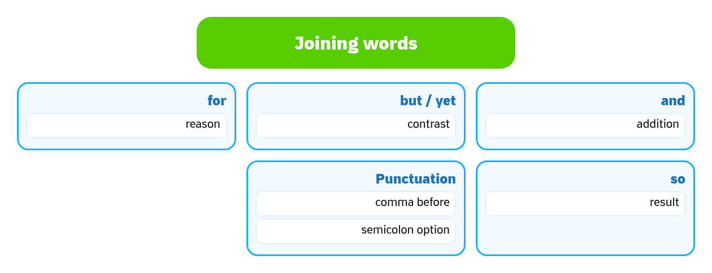

آداب الإنجليزية
: قواعد وجرامر وشعر وأساطير
⭐
0
🔥
استمر!
🔗
Essay Writing 19: كلمات الربط and, but, for, so, yet والـ Semicolon
📊
المستوى: B1
الدرس 19
✍️
كتابة المقالة
📄 حمّل PDF الدرس
📝 ملخص الدرس (عربي) PDF
📝 Lesson Summary (English) PDF
🧠 الخريطة الذهنية PDF
🧠 شوف الخريطة الذهنية للدرس

→
الدرس اللي قبله
كل دروس الكورس
الدرس اللي بعده
←